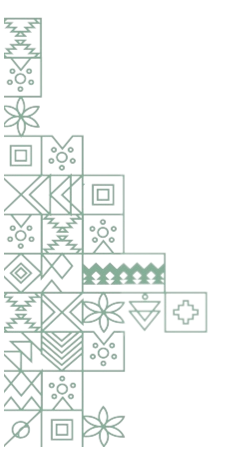

<section class="third-saudia">
    <div class="container">
        <div class="row">
            <div class="col-lg-6">
                <div class="third-saudia-content">
                  <h2 data-aos="fade-up"   data-aos-duration="400" 
                  data-aos-delay="200"    data-aos-easing="linear">في عام 1902م</h2>
                  <p data-aos="z00m-in"   data-aos-duration="400" 
                  data-aos-delay="200"    data-aos-easing="linear">استطاع الملك عبد العزيز بن عبد الرحمن آل سعود العودة إلى الرياض ومعه مجموعة 
                    من الأشخاص، وتمكن بذلك من استعادة حكمه إلى سابق عهده، وبذلك كانت بداية ظهور الدولة السعودية الثالثة التي تكللت بانسحاب القوات العثمانية منها في عام 1906م، [٣]ثم تأسست الممكة العربية السعودية في تاريخ 23 سبتمبر 1932م.</p>
                </div>
            </div>

            <div class="col-lg-5">
                <div class="third-saudia-img" data-aos="fade-up"   data-aos-duration="300" 
                data-aos-delay="200"    data-aos-easing="linear">
                    
                    <div class="layer">
                        
                    </div>
                </div>
            </div>
        </div>
       
    </div>
</section>
